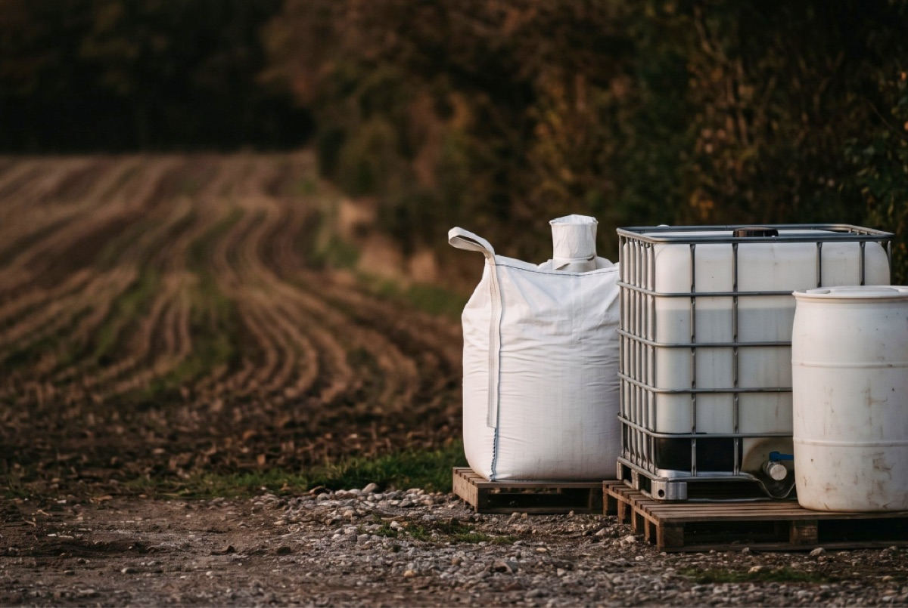

Próchnica+
Wspólnie z producentami odbudowujemy polskie gleby
Próchnica+ to nasz wieloletni program doświadczalny, prowadzony we współpracy z producentami rolnymi i ogrodniczymi. W rzeczywistych warunkach uprawowych sprawdzamy, jak systematyczne stosowanie produktów CarboHort wpływa na właściwości i parametry gleby oraz kondycję i rozwój roślin.
Doświadczenia prowadzimy w różnych uprawach, regularnie analizując parametry gleby i obserwując zmiany zachodzące w roślinach na przestrzeni kolejnych sezonów.